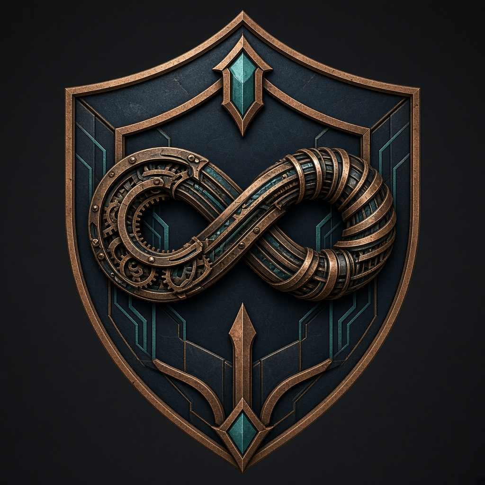
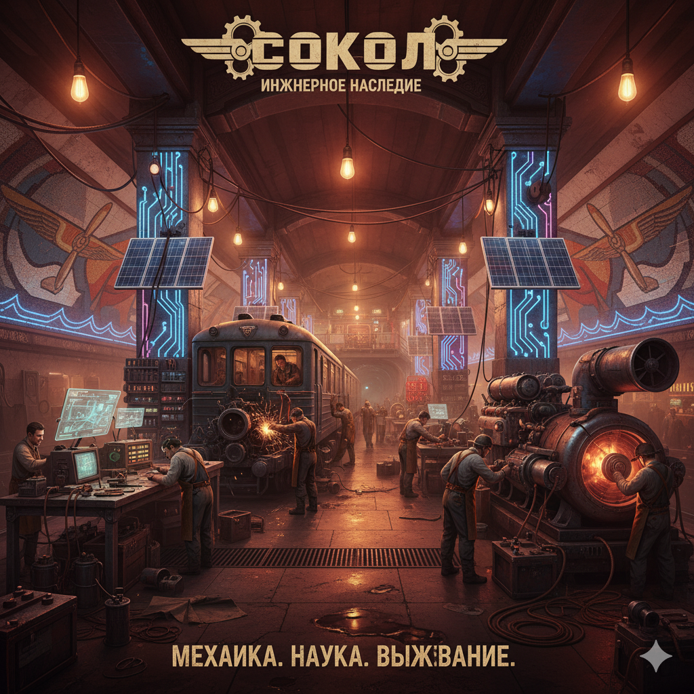
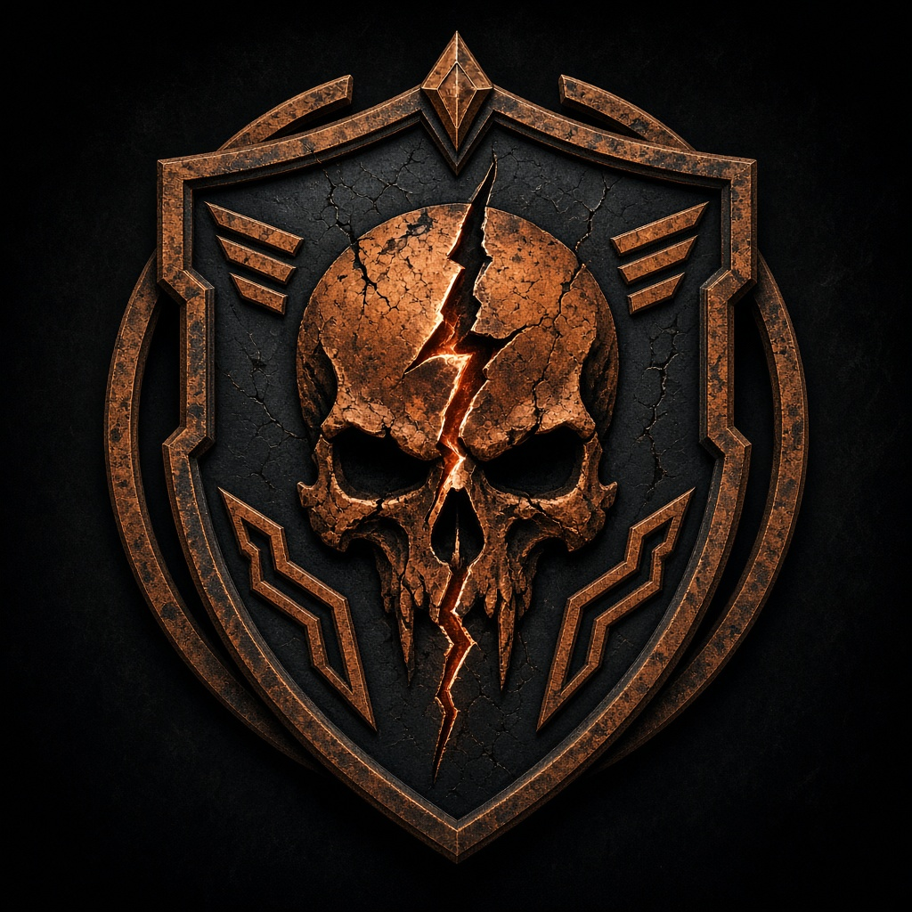
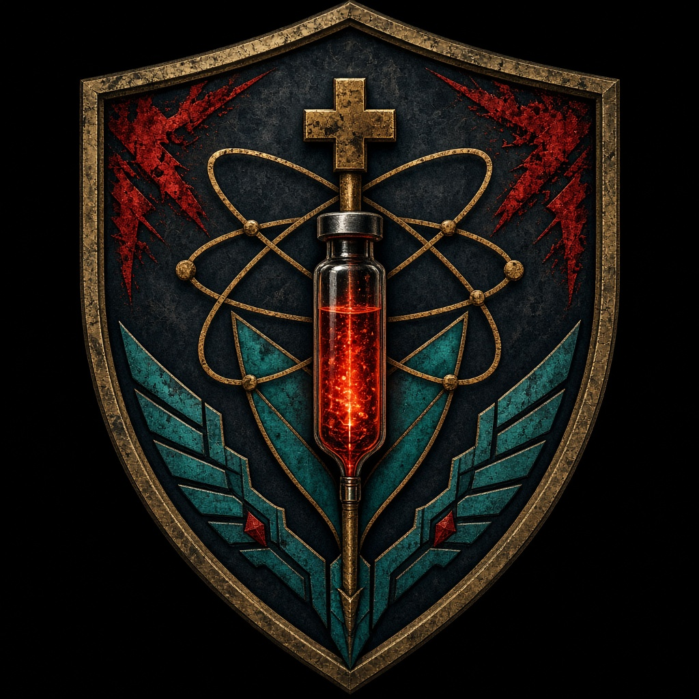
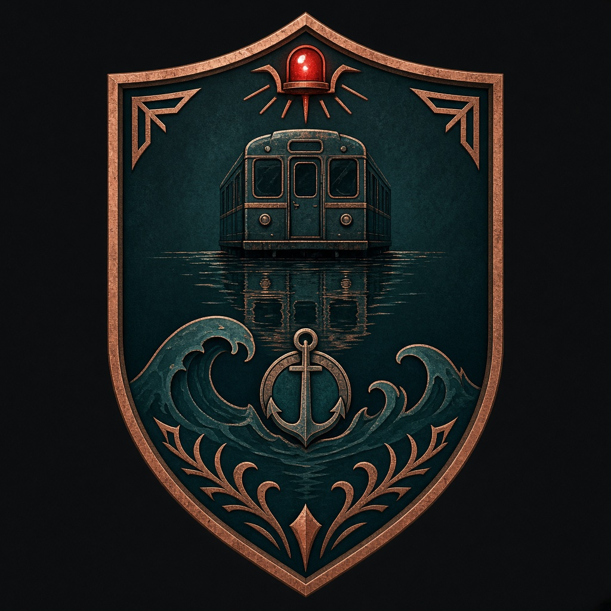
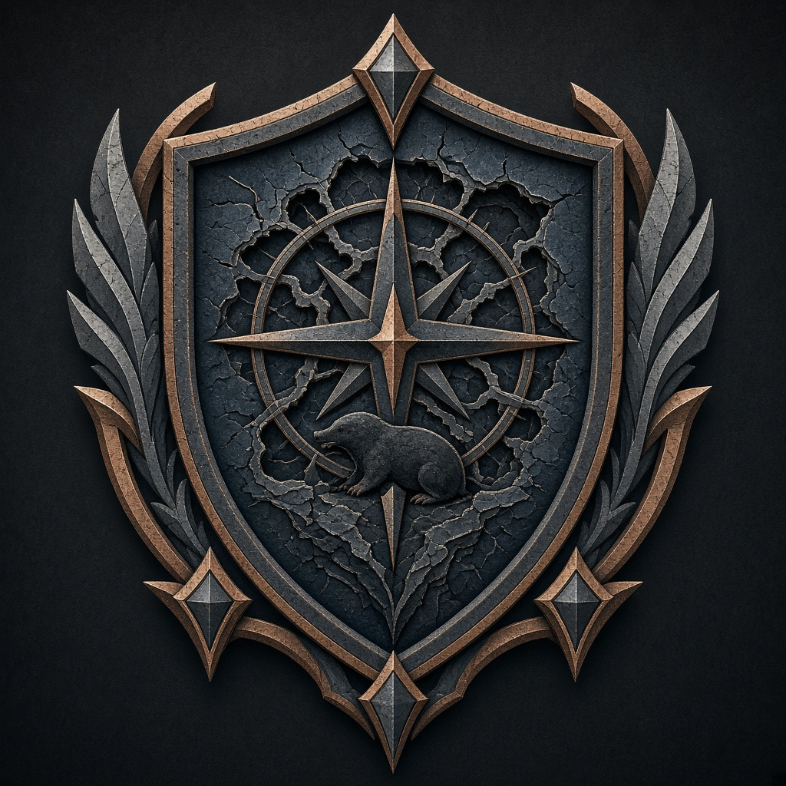

м. Сокол, м. Аэропорт, м. Динамо
Инженеры
Символ: ∞ на боку
Философия: кто держит радио, тот держит тоннель

Нажмите карточку: подсветится зона на карте.






Ходят по реке и тоннелям, своей станции нет.


Клик по зоне · перетащите карту · кнопки +/−. На компьютере ещё Shift+колёсико.